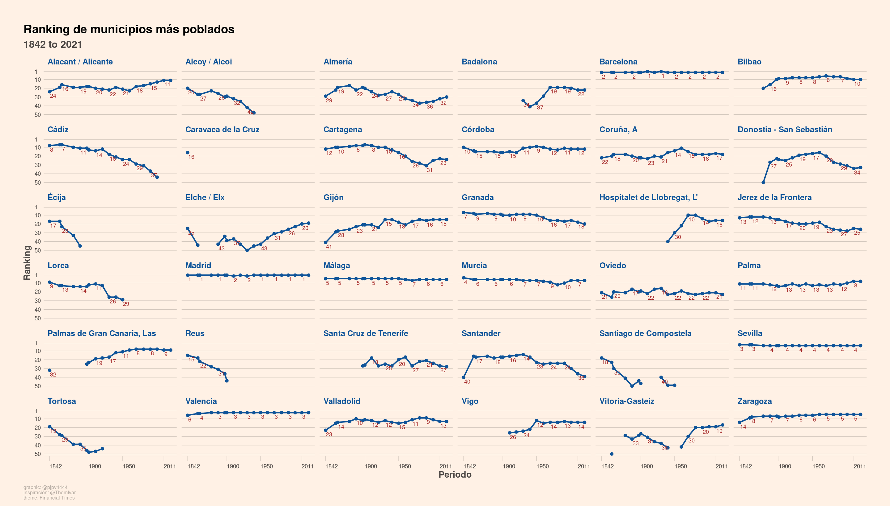

Utilizando datos de los censos históricos y del Padrón se presentan visualizaciones con el el ranking de ciudades españolas más pobladas desde el censo de 1842 hasta la actualidad.
Nota: Este post lo empecé en julio de 2022. Tenía los gráficos y demás, pero lo tuve que abandonar. Ahora, un año después, julio de 2023, lo estoy retomando; pero solo voy a poner algunos gráficos y tablas de los que hice. Poco más. No pienso redactar mucho 😉.
1 Introducción
Voy a utilizar datos de los censos históricos de población del INE1 para analizar la evolución del ranking de municipios españoles más poblados. Al lío!!
2 Ranking de municipios más poblados
Voy a mostrar en una tabla y un gráfico el ranking de los municipios mas poblados en cada censo. Mostraré solo los municipios que en alguno de los censos haya estado entre los 20 municipios mas poblados. Para que la tabla y los gráficos se vean razonablemente bien voy a mostrar los resultados de solo algunos de los censos y para acercarnos más a la situación actual, usaré también datos de población del Padrón de 2021.
Tabla
Código
# Post censos históricos# Objetivo: ver que capitales de provincia estuvieron en algún momento entre las 10 más pobladaslibrary(tidyverse)# cargo censos históricos df <- pjpv.datos.2022::ine_censos_historicos# fusiono con datos de padrón 2021 df_padron <- pjpv.curso.R.2022::ine_pob_mun_1996_2021 %>%filter(year ==2021) %>%filter(poblacion =="Total") %>%select(- poblacion, - ine_muni.n.orig) %>%rename(pob = values) %>%select(ine_muni, year, pob)# quito municipios de 2021 que no estan en df (1842-2011)df_padron <- df_padron %>%filter(ine_muni %in%unique(df$ine_muni))# pongo a df las v. q van a hacer falta (ine_prov etc ....zz <- df %>%select(ine_muni, ine_muni.n.h, ine_prov, ine_prov.n, ine_ccaa, ine_ccaa.n, capital_prov, capital_ccaa, year) %>%filter(year ==2011) %>%select(-year)df_padron <-left_join(df_padron, zz)# fusiono censos y padrón OK df <-full_join(df, df_padron)zz <- df %>%filter(ine_muni =="28079")zz <- df %>%filter(ine_muni.n.h =="Pancrudo")# calculo rankings (para cada censo)df <- df %>%#select(year, ine_muni, ine_muni.n, pob, ine_prov) %>%group_by(year) %>%arrange(desc(pob), desc(lag(pob)) ) %>%mutate(rank_1 =1:n(), .after = pob) %>%mutate(rank_2 = dplyr::dense_rank(desc(pob))) %>%ungroup() %>%arrange(year)# calculo tb variaciones en el rankingdf <- df %>%group_by(ine_muni) %>%arrange(year) %>%mutate(rank_dif_1 =lag(rank_1) - rank_1, .after = rank_1) %>%mutate(rank_max_dif_1 =max(rank_1, na.rm =TRUE) -min(rank_1, na.rm =TRUE), .after = rank_dif_1) %>%ungroup()zz <- df %>%filter(ine_muni.n.h =="Teruel")# calculo de crecimientos etc....df <- df %>%group_by(ine_muni) %>%arrange(year) %>% dplyr::mutate(pob_incre = pob -lag(pob)) %>% dplyr::mutate(pob_percent = pob_incre /lag(pob) *100) %>% dplyr::mutate(qq_years = year -lag(year)) %>% dplyr::mutate(pob_percent_acu =cumsum(coalesce(pob_incre,0)/first(pob)*100)) %>% dplyr::mutate(qq_years_acu =cumsum(ifelse(is.na(qq_years), 0, qq_years))) %>% dplyr::mutate(crec_percent_medio = pob_percent/qq_years) %>% dplyr::mutate(crec_percent_medio_acu = pob_percent_acu/qq_years_acu) %>%relocate(c(ine_prov, ine_prov.n), .after =last_col()) %>% ungroupzz <- df %>%filter(ine_muni.n.h =="Teruel")# veamos q capitales de prov. han estado alguna vez entre las 10 más pobladasqq_mas_pobladas <-20zz <- df %>%filter(rank_1 <= qq_mas_pobladas) %>%distinct(ine_muni, ine_muni.n.h) %>%pull(ine_muni.n.h) #%>% print() # 17 ciudades (cuidado con filtrar x nombre)zz <- df %>%filter(rank_1 <= qq_mas_pobladas) %>%distinct(ine_muni, ine_muni.n.h) # xx ciudades (cuidado con filtrar x nombre)#print(zz$ine_muni.n.h)# filtremos, quedémonos con los datos de esas xx ciudadesdf_table <- df %>%filter(ine_muni %in% zz$ine_muni) # ok# Tablas ----------------------------------------------------------------------# nos quedamos con las 3 v. q queremos mostrardf_table <- df_table %>%select(ine_muni.n.h, year, rank_1)# hay q pasar la df_table a formato ancho (2 posibilidades)df_t1 <- df_table %>% tidyr::pivot_wider(names_from = year, values_from = rank_1)df_t2 <- df_table %>% tidyr::pivot_wider(names_from = ine_muni.n.h, values_from = rank_1)# hay muchos pkgs para tablas# DT::datatable(df_t1)# gt::gt(df_t2)# gt: https://gt.rstudio.com/# gallery: https://community.rstudio.com/c/table-gallery/64# ejemplo: https://jelloque.github.io/trabajo_BigData/#5_LOS_CICLISTAS# otro: https://twitter.com/irg_bio/status/1486291227255451648?ref_src=twsrc%5Etfw%7Ctwcamp%5Etweetembed%7Ctwterm%5E1486291227255451648&ref_url=file%3A%2F%2F%2Fhome%2Fpjpv%2FEscritorio%2Fmys_COSAS%2Fmy_learn_RR%2Flearn_ggplot2%2Fejemplos_ggplot2_2022.html# gt::gt(df_t2) %>%# gt::tab_header(title = "Capitales más pobladas",# subtitle = glue::glue("{min(df$year)} to {max(df$year)}"))# quito algunos censos para que las tablas se vean mejorzz <- df %>%distinct(year)df_ok <- df_t1 %>%rename(municipio = ine_muni.n.h) %>%select(municipio, `1842`, `1857`, `1877`, `1897`, `1910`, `1930`, `1950`, `1970`, `1991`, `2021`)# table_ok <- df_ok %>% # reactable::reactable(defaultPageSize = 36, compact = TRUE,# filterable = TRUE, # theme = reactablefmtr::fivethirtyeight(cell_padding = 1, font_size = 11, header_font_size = 13)) # # table_ok# # mejoramos las tablas --------------------# DT: https://rstudio.github.io/DT/# DT::datatable(df_ok, filter = 'top', extensions = "Scroller",# class = 'cell-border stripe',# options = list(autoWidth = TRUE,deferRender = TRUE,# scroller = TRUE, scrollY = 750 ))
Por hacer un mínimo comentario de los resultados mostrados en la tabla, señalar que Madrid ha estado siempre en el puesto 1 o 2, Barcelona siempre en segundo lugar excepto en los censos de 1910 y 1930. Cádiz pasó de ser la octava ciudad más poblada en 1842, para estar actualmente (2021) en el 57. Lorca ha seguido una evolución similar, del noveno puesto al 67. Hospitalet de LLobregat ha experimentado un gran aumento en su puesto en el ranking: era un municipio relativamente pequeño que ocupaba el puesto 1042 en el año 1842, para estar actualmente en el puesto número 16. Por su parte Caravaca de la Cruz era el 16º municipio por población en 1842 para descender hasta el puesto 313 en el Padrón de 2021.
Gráfico
Las tablas están muy bien si necesitas sabes los valores exactos de una variable o si quieres ver algún detalle, pero para ver la evolución es mejor un gráfico. Vamos a ello.
En el primer gráfico mostraré la evolución del ranking de población para los municipios que alguna vez, en algún censo, estuvieron entre los 20 municipios más poblados.

Ahora, el mismo gráfico pero con plotly para añadirle un poco de interactividad.
Lógicamente en los gráficos se aprecia mejor la evolución del ranking de municipios por población. Por ejemplo Lorca empezó, allá por 1842, siendo el noveno municipio español más poblado, pero fue descendiendo en el ranking hasta el puesto 20 en 1950, y a partir de ahí desaparece del gráfico porque su ranking esta por debajo del nº 50.
Más gráficos
Probé algunos gráficos más, quedan chulos, pero no son muy útiles porque hay demasiada información. Los tengo en el script 03_ej_caso_901_censos-historicos_ok.R. Pero será para otro día
3 Otros posibles temas
Obtuve los datos de los censos históricos en 2022. Es 2023 y no me apetece seguir con estos datos, en realidad lo que me apetece es usar otros datos, pero dejo apuntados algunos temas que se podrían analizar con estos datos.
Municipios desaparecidos: por ejemplo ¿qué provincia ha presentado una mayor desaparición/fusión de municipios en el tiempo? por ejemplo un mapa con los municipios desaparecidos y aparecidos en la época moderna del Padrón
Importancia histórica de las provincias en cuanto a población; es decir, que porcentaje representa la población de cada provincia sobre la población española. Igual puedes tratar de usar un gráfico parecido a este
Importancia histórica de las capitales de provincia: por ejemplo ver el % que representa la población de la capital de la provincia respecto a la población provincial
Concentración de la población en ciudades: ¿está más concentrada la población en ciudades grandes? por ejemplo ver la evolución del número de municipios que acumulan el 50% de la población
Notas
En este post expliqué el proceso que seguí para obtener los datos↩︎
![]()